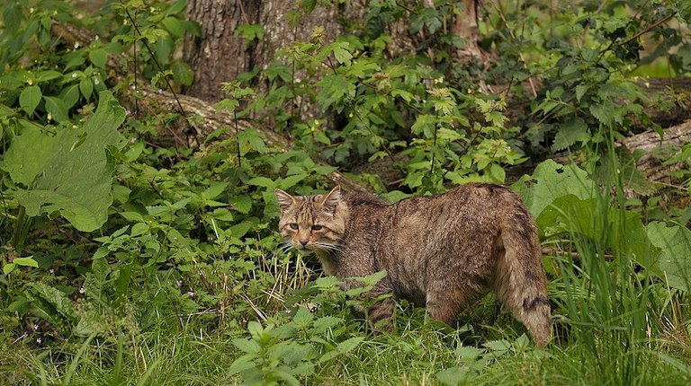

A wildcat for a thesis dissertation.
Illustrated on
My brother is a conservation biologist studying endangered carnivore populations in Portugal. For his thesis defence, he asked me to draw the possible habitat distribution of the European wildcat—one of his favourite felids.

These cats look a lot like feral cats but are on average bigger and stouter, with longer fur and bushier tails. They also have distinct striped patterns. Because they can mate with domestic cats and have hybrid kitties, sightings or captures usually need genetic testing to distinguish them.

Michael Gäbler, CC BY 3.0, via Wikimedia Commons

Interbreeding, loss of habitat, and shootings, have made European wildcats harder to spot. I hope this illustration helps introduce more people to these furry fellows and some of the conservation efforts trying to protect them.